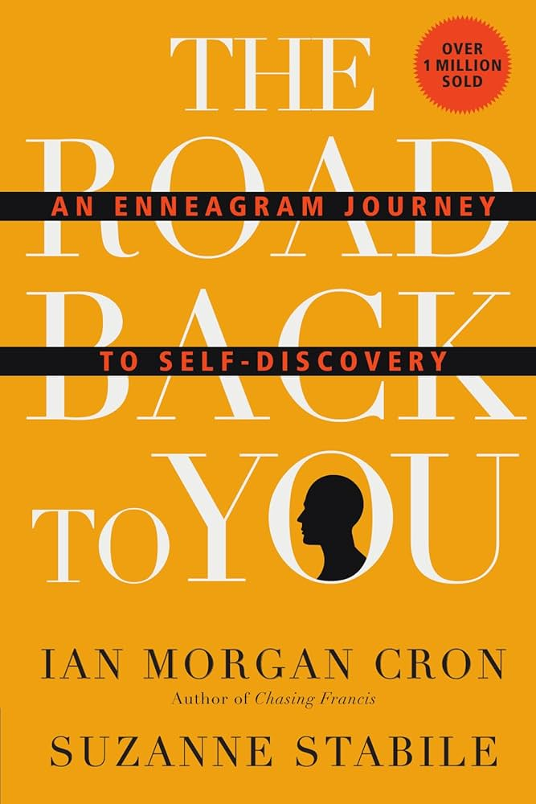

The Road Back To You
The Road Back to You by Ian Morgan Cron and Suzanne Stabile is a popular book that introduces the Enneagram, an ancient personality typing system, for self-discovery, compassion, and spiritual growth, particularly within a Christian context. The "Set" likely refers to the main book and its companion study guide, which offers tools for deeper exploration, including group study sessions and reflections on each of the nine types. The book helps readers understand their own motivations and see others with more empathy by exploring the strengths and weaknesses of each Enneagram number.